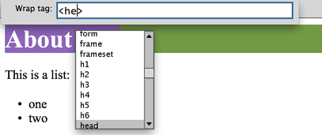

Practical - CSS
Notes
This prac is not the sole resource for CSS learning. Please refer to your books, videos, Dreamweaver help...
If you're not using Dreamweaver, you can do all of this in PHPStorm or similar - just writing HTML and CSS code directly.
Aim:
- To use styles (CSS) to format all fonts, colours, borders, margins, etc. for the mini site you made (about yourself) from week 2. If you don't have that with you, you can use another site you've been working on, or quickly make up a two- or three-page website with some text, lists, headings, links and images.
- To learn to use
<div> and <span> to create areas (logical sections) to apply styles to.
- To learn to use # for id, and . for class for their appropriate purposes.
Example:
This page that you're looking at uses some nice styles. An example with these and some other styles is available (download cssExample.zip from LearnJCU) for you to inspect.
The note box above is styled using a class (called notebox), applied to a div (logical division). This class can be reused for other boxes like this one, which looks different because it doesn't have a heading.
The "Note" text is inside an <h4> element, and the rest of the text is inside a <p>, like:
<div class="notebox">
<h4>Note</h4>
<p>This prac is not the sole resource for CSS learning. Please refer to ...</p>
</div>
(in HTML5, h1..h6 are actually treated as generic headings with their level determined by the nesting of the section they are in)
The CSS code for the styles is in the same file as this (we would normally use an external CSS file, but that's not easy on LearnJCU), and is:
.notebox {
clear:both; background-color:#FFFFCC;
border:#97bfff 1px solid; margin-right: 1.2em; margin-left: 1.2em;
}
.notebox h4 {
font-size: 0.8em; margin:0px; font-style:normal;
padding-left:1em; padding-right:0.3em; padding-top:0.2em; padding-bottom:0.2em;
background-color:#97bfff;
}
.notebox p {
font-size:0.8em; margin:0px;
padding-left:0.3em; padding-right:0.3em; padding-top:0.5em; padding-bottom:0.2em;
}
For the actual styles used in this page, view the source of the file.
Leave this open in a separate window throughout the prac work.
You might also like to copy the CSS (everything inside the <style> element) into a .css file in Dreamweaver or Brackets so you can see it easily (including source colouring).
What the above code means, is...
The first style is a class called notebox: the . in front of the name means that it can be applied using the class attribute. Inside the { } braces are a number of declarations (properties and values) to define what this should look like.
In the HTML code, the class attribute is set like <div class="notebox">...</div> (no dot used here).
The second style's selector is .notebox h4 - note the space - so it applies to all <h4> elements that are inside any notebox class.
See if you can tell what the third style applies to...
In HTML, you choose to use <div> for logical block-level sections (that have a line break before and after), and you use <span> for inline styles, like highlighting some text in a sentence.
<div> is a block element (like p), <span> is inline (like img).
HTML5 added a number of new elements for sectioning content that all work a lot like divs, including section, article, aside... These are all block-level elements.
Let's Get Stylin'
Here are some basic instructions to get you started...
You will use Dreamweaver's CSS Designer panel (if it's not visible, choose it from the Window menu) and write some code directly. You will need to be able to write CSS code by hand for your exam.
Get your site from last week (About Me) ready in Dreamweaver - set up as a defined site.
Adjust your workspace so you can see the design view, code view, properties panel, files window and CSS Designer all at the same time.
All of the styles you make should go into your external style sheet file - select this in the "Sources" section of CSS Designer window.
- You can redefine the look of any HTML element without re-writing any HTML.
That's why you should always choose the right/best elements to start with.
Style all <h1> headings to use italics by typing the following code in your existing styles file (you can change it back later if you like):
h1 { font-style:italic; }
- Now set the default font for all text, using something like the code below... but this time don't type it in. Use the CSS Designer panel to select the body and set these properties (with actual values as you wish):
body { background-color: #ffffff; color: #000000; font-family: Arial, Helvetica, sans-serif; text-align:left; }
- Let's section up some content on our site - starting with the home page.
Create a header: You can either use the HTML5 <header> element or use <div id="header">... we'll use <header> today.
- Select the top section (probably just a text heading) with your mouse and press Ctrl+T (or Cmd+T on Mac) to get to wrap tag (press it multiple times to cycle through different options):

Type header (not head) and press Enter
- This doesn't do much yet, but we can now apply a style to it.
Select it in the CSS Designer panel and adjust at least the following properties, watching it change as you do (perhaps use live view):
- border
- background-color
- margin
- padding
- Do the same thing for a
<footer> at the bottom of your page - adding some content if you don't have anything there.
Style this to complement your header. You might like to experiment with things like rounded corners - check this page's styles for an example
- Do it one more time for
<nav> - and put your page navigation in the nav section.
- You should now have a fairly well structured page with a header, footer, nav and a middle bit... which also should have some structure...
So wrap your "middle bit" in a <section> tag, giving it the id "main", i.e.
<section id="main">
- Now you can style your main section using an id selector (#main). Do this now... (you probably want to add some margin-left)
- Lastly, try using a <span> element and styling this:
Select some text
with your mouse and press Ctrl+T to wrap tag, and type <span class="highlight">
Then create a style for highlight, remembering that class selectors start with a . in CSS.
Testing
A useful thing to do is to disable styles in your browser and make sure that the structure of your page still looks accurate.
In Firefox you can choose View > Page Style > No Style
Your headings should still look like headings, your paragraphs like paragraphs, etc.
Spend some time now adding more styles to your website until you're reasonably happy with it (but don't spend too long).
Let's try the pseudo-class selectors for hovering over links...
- Make sure you've got some links in the HTML document you're styling. (You should.)
- Create a new style rule with code, using the selector
a:hover
- Change an obvious property like colour or background colour, and test your results.
You will sometimes see dodgy styles that use a different font size for the rollover effect. This is not a good idea because then your page "jumps around" as the text changes size. Perhaps try it and see how awful you can make it :) Can you make one worse than this? (rollover this link now)
- You can use the same methods to set
a:visited and the others - try it.
Some designers intentionally change the visited link colour so that it is the same as the other links. Why is this not usually a good idea?
- You can create fairly convincing-looking "buttons" without images using CSS and properties like background-color, padding, margin and border, then assigning a different background-color for the hover effect. See the example "site" also linked from LearnJCU for this prac (download the zip file and extract it to check it out).
The example also has code for using a different style sheet (also included) when you print it. Print to PDF to see what it looks like.
- You can also find good tutorials on how to use the hover pseudo-class with the background-image property to create rollover buttons (no JavaScript required) - e.g. http://www.elated.com/articles/css-rollover-buttons/
(If you know any other good sites, please post them on the discussion board.)
If you're keen, try this
out with your site from this week:
- Create (slice) buttons in Photoshop and create rollover images (something a bit different so you see the effect) the same size (or you could use the "stacked" image option like in the tutorial linked to above)
- Export your images/site and get it ready
- Use the id attribute to give your buttons unique names
- Use the # identifier in CSS to style each button so that it hovers with the right background image.
- In webcredibal's CSS rollover buttons tutorial they have a normal <img...> for the main button, and a background image that can't be seen until the rollover, when the main image's
visibility property is set to "hidden" (and then back to "visible" on rollout). Try this nice technique if you like.
Print Styles
- One of the great things about CSS is using different style sheets for different purposes. The CSS example for this prac uses a second set of styles for print view.
- Have a look at this and test it by printing to PDF...
- See how it works and then...
Apply this technique to your own work.
Keep trying things out and noticing what Dreamweaver does in your code window.
Don't worry if it's not all totally making sense just yet... keep at it and it pick up what you can.